Attention mechanism: SENet & SKNet
注意力机制论文阅读，第二次汇报的论文为：
- 下载地址：（SKNet）Selective Kernel Networks (arXiv: 1903.06586)
- 发表时间（e-prints posted on arXiv）：2019 年 03 月.
0. 论文列表（已读一遍）
-
Inside-Outside Net: Detecting Objects in Context with Skip Pooling and Recurrent Neural Networks (arXiv: 1512.04143)
-
Spatial Transformer Networks (arXiv: 1506.02025)
-
Residual Attention Network for Image Classification (arXiv: 1704.06904)
-
✅ （SENet）Squeeze-and-Excitation Networks (arXiv: 1709.01507)
-
SENet brings an effective, lightweight gating mechanism to self-recalibrate the feature map via channel-wise importances.——SKNet 论文中对 SENet 的描述。
-
-
Concurrent Spatial and Channel ‘Squeeze & Excitation’ in Fully Convolutional Networks (arXiv: 1803.02579)
-
three variants of SE modules for image segmentation.
-
-
CBAM: Convolutional Block Attention Module (arXiv: 1807.06521)
-
Beyond channel, BAM [32] and CBAM [45] introduce spatial attention in a similar way.
——SKNet 论文中的描述。
-
-
✅ （SKNet）Selective Kernel Networks (arXiv: 1903.06586)
1. 解析 Selective Kernel Convolution
SKNet：用 multiple scale feature 汇总的 information 来 channel-wise 地指导如何分配侧重使用哪个 kernel 的表征。
- adaptively adjust their RF sizes. 自适应的调整其感受野的大小。
SK 模块所做的工作是：输入的特征图为 $X \in \mathbb{R}^{H’ \times W’ \times C’}$，经过 SK Convolution 后，得到输出的特征图为 $V \in \mathbb{R}^{H \times W \times C}$。SK 卷积有 3 个步骤：Split, Fuse and Select.
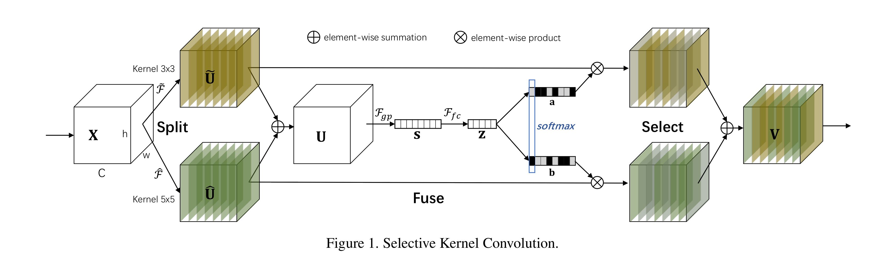
1.1 SK Convolution: Split (1/3)
对于输入的特征图 $X \in \mathbb{R}^{H’ \times W’ \times C’}$，默认情况下进行两次转换：
（1）$\tilde{F}: X \rightarrow \tilde{U} \in \mathbb{R}^{H \times W \times C}$
卷积核的大小为 $3 \times 3$。
（2）$\hat{F}: X \rightarrow \hat{U} \in \mathbb{R}^{H \times W \times C}$
卷积核的大小为 $5\times 5$。为了进一步提高效率，$5 \times 5$ 的卷积使用空洞大小为 2 的 $3 \times 3$ 的卷积来替代。
1.2 SK Convolution: Fuse (2/3)
Fuse 操作和 Squeeze and Excitation block 一样。
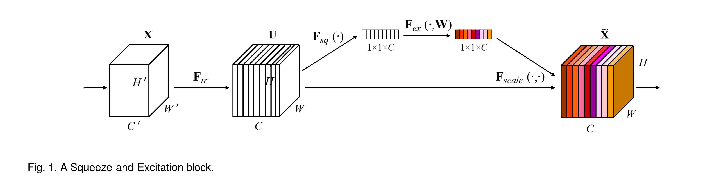
（1）integrate information from all branches.
将分支进行 element-wise 的求和，得到 $U \in \mathbb{R}^{H \times W \times C}$。
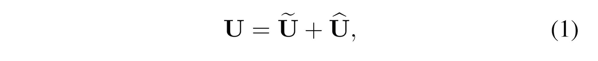
（2）global average pooling.
得到 $s \in \mathbb{R}^{C \times 1}$，s 是一个有 C 个元素的列向量。

（3）compact feature by simple fully connected (fc) layer.
使用全连接层，即 $s \in \mathbb{R}^{C \times 1} \rightarrow z \in \mathbb{R}^{d \times 1}$，其中 $d < C$。
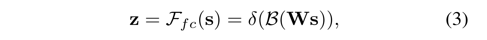
- $\delta$ 使用 ReLU 函数，
- $B$ 表示 Batch Normalization，
- $W \in \mathbb{R}^{d \times C}$，权重矩阵。
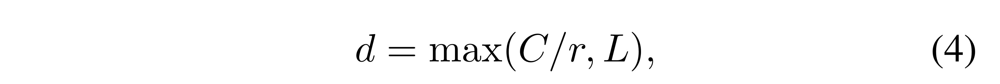
- reduction ratio $r$ 是一个超参数，
- 一般设置 L = 32。
1.3 SK Convolution: Select (3/3)
这一步是 SK Block 的核心操作。
A soft attention across channels is used to adaptively select different spatial scales of information, which is guided by the compact feature descriptor z.
（1）Soft attention across channels.
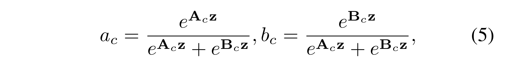
- $A, B \in \mathbb{R}^{C \times d}$，这两个矩阵也是端到端训练出来的。如果只有两个分支，那么矩阵 B 是冗余的，因为 Softmax 的输出 $a_c + b_c = 1$，可以通过 1 减去另一个得到。
- $z \in \mathbb{R}^{d \times 1}$，经过 softmax 操作后，得到的 $a \in \mathbb{R}^{C \times 1}$.
- z 被称为 compact feature descriptor.
- a 被称为 soft attention vector.
（2）The final feature map $V$ is obtained through the attention weights on various kernels.
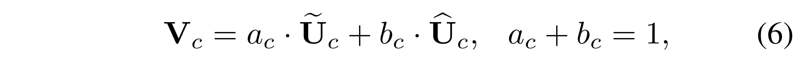
- $\tilde{U}, \hat{U} \in \mathbb{R}^{H \times W \times C}$
- $a, b \in \mathbb{R}^{C \times 1}$
- 执行的操作是 element-wise product. $a_c \cdot \tilde{U}_c$ 表示第 c 个通道的特征图上的每个点，都乘以数 $a_c$。
综上，就是 SK Convolution 的内部原理细节。
3. 实验
SK Convolution $\rightarrow$ SK unit $\rightarrow$ ==SK Networks==.
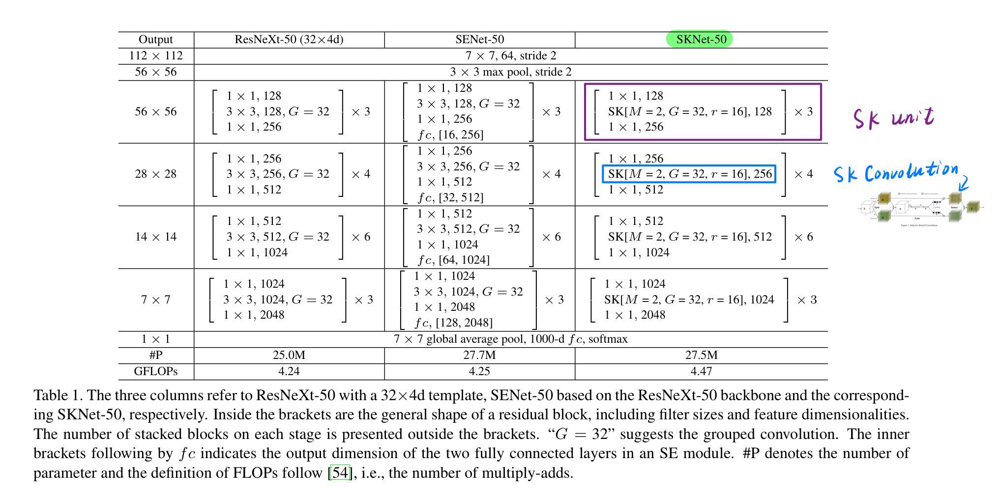
2.1 Selective Kernel (SK) Convolution (1/3)
2.2 Selective Kernel (SK) unit (2/3)
2.3 Selective Kernel (SK) Networks (3/3)
2.4 CIFAR-10
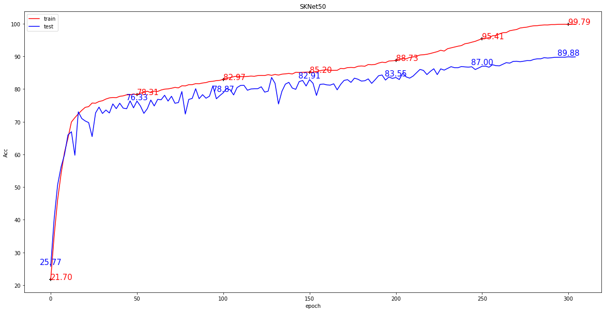
在 CIFAR 数据集上，作者实现的细节：
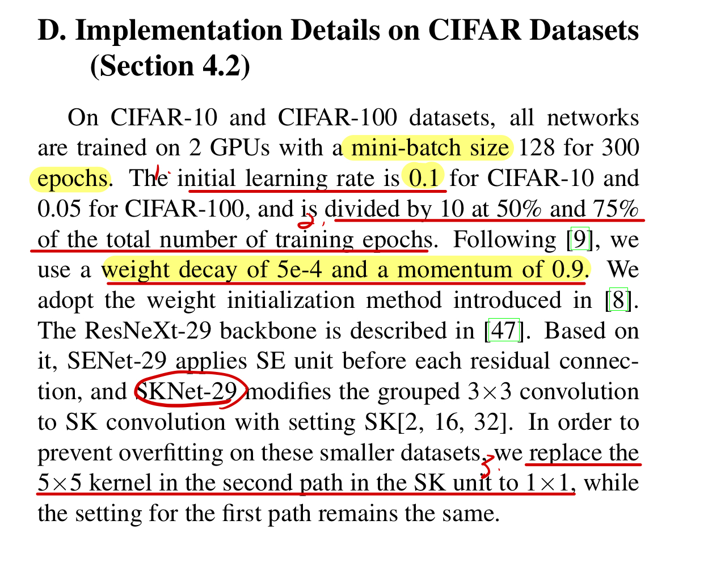
- 把第二条分支的 5×5 卷积核替换成 1×1，第一条分支保持不变。还是上不去 90%，过拟合严重。

- 论文中提到，设置 SK[2, 16, 32]，还是上不去 90%。
依旧是过拟合非常严重。进行一定的数据增强（Resize 32×32 为 64×64）后，精度能够上 90%。
如果获取 EAT？——根绝每个 epoch 的时间，估计总的训练时间。
3. Notes
SK Block 在检测问题中没有显著效果。
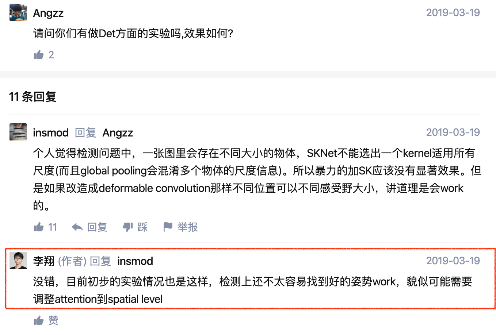